Next: Speaker Diarization: from Broadcast Up: Multichannel Acoustic Enhancement Previous: Microphone Array Beamforming Contents
In order to apply almost any of the array beamforming techniques in an acoustic signal, and given that the location of the acoustic source is not given, one needs a way to estimate the TDOA between channels or the Direction of Arrival (DOA) of the signal. In practice the DOA estimation is much less used for signal enhancement in this domain as its requirements and computational cost are normally higher than for TDOA. DOA estimation has also been considered less suitable than TDOA for broadband signals.
There have been many techniques proposed in the past in order to estimate the TDOA between a pair of sensors, like the use of LMS adaptive filters used in sonar (F. Reed and Bershad (1981), Schmidt (1986)).
However, the approaches that have become more popular on recent years have been those based on the cross-correlation of the signals. Given two real signals, 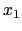 and 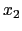, the cross-correlation between them is defined as:
| 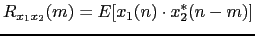 | (2.34) |
although, as in practice one cannot work with infinite signals, it is estimated as:
| 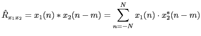 | (2.35) |
where each signal has length N. In order to do this computation in a more efficient way, both signals are first Fourier transformed, the product is computed and then the inverse Fourier transform is applied.
When the cross-correlation between two signals is computed where one of the signals is a (similar) delayed version of the other by a time T, the main peak of the cross-correlation will be located at either time 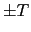 (depending on which signal is and ). In real applications though, there are many disturbing factors that will affect the position of the peak or will mask it. These factors can be noise, reverberation and others. The case of reverberation has been greatly studied in the literature (Champagne et al. (1996), Brandstein and Silverman (1997)).
Addressing this problem, the Generalized Cross Correlation (GCC) was introduced (Knapp and Carter, 1976). It implements a frequency domain weighting of the cross correlation according to different criteria, in order to make it more robust to external disturbing factors. The general expression for the GCC is:
| 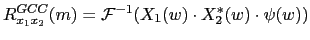 | (2.36) |
where 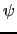 is a weighting function. If 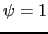 for all 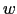 the standard cross correlation formula is obtained.
The first weighting function that will be considered is the Roth correlation (Roth, 1971), which weights the cross correlation according to the Signal to Noise Ratio (SNR) value of the signal. Its results approximate an optimum linear Wiener-Hopf filter (Trees, 1968). Frequency bands with a low SNR obtain a poor estimate of the cross correlation and therefore are attenuated versus high SNR bands.
| 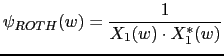 | (2.37) |
A variation of the ROTH weight is the Smoothed Coherence Factor (SCOT) (Carter et al., 1973) which acts upon the same SNR-based weighting concept, but allows both signals being compared to have a different spectral noise density function.
| 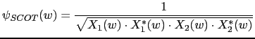 | (2.38) |
In environments with high reverberation, the Phase Transform (PHAT) weighting function (Knapp and Carter, 1976) is the most appropriate as it normalizes the amplitude of the spectral density of the two signal and uses only the phase information to compute the cross correlation. It is applied to speech signals in reverberant rooms by Brandstein and Silverman (1997).
| 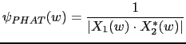 | (2.39) |
The GCC-PHAT achieves very good performance when the SNR of the signal is high, but deteriorates when the noise level increases. This is the solution used as weighting function in the beamforming implementation proposed in this thesis.
Another weighting function of interest is the Hannan & Thomson (Knapp and Carter (1976), Brandstein et al. (1995)), also known as Maximum Likelihood (ML) correlation, which also tries to maximize the SNR ratio of the signal. For speech applications, Brandstein et al. (1995) proposed the approximation:
| 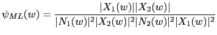 | (2.40) |
where 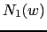 is the noise power spectra.
Finally, the Eckart filter (Eckart, 1952) maximizes the deflection criterion, i.e. the ratio of the change in mean correlation output due to signal present compared to the standard deviation of correlation output due to noise alone. The weighting function achieving this is:
| 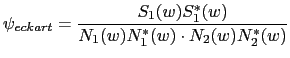 | (2.41) |
where 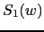 is the speech power spectra.
user 2008-12-08